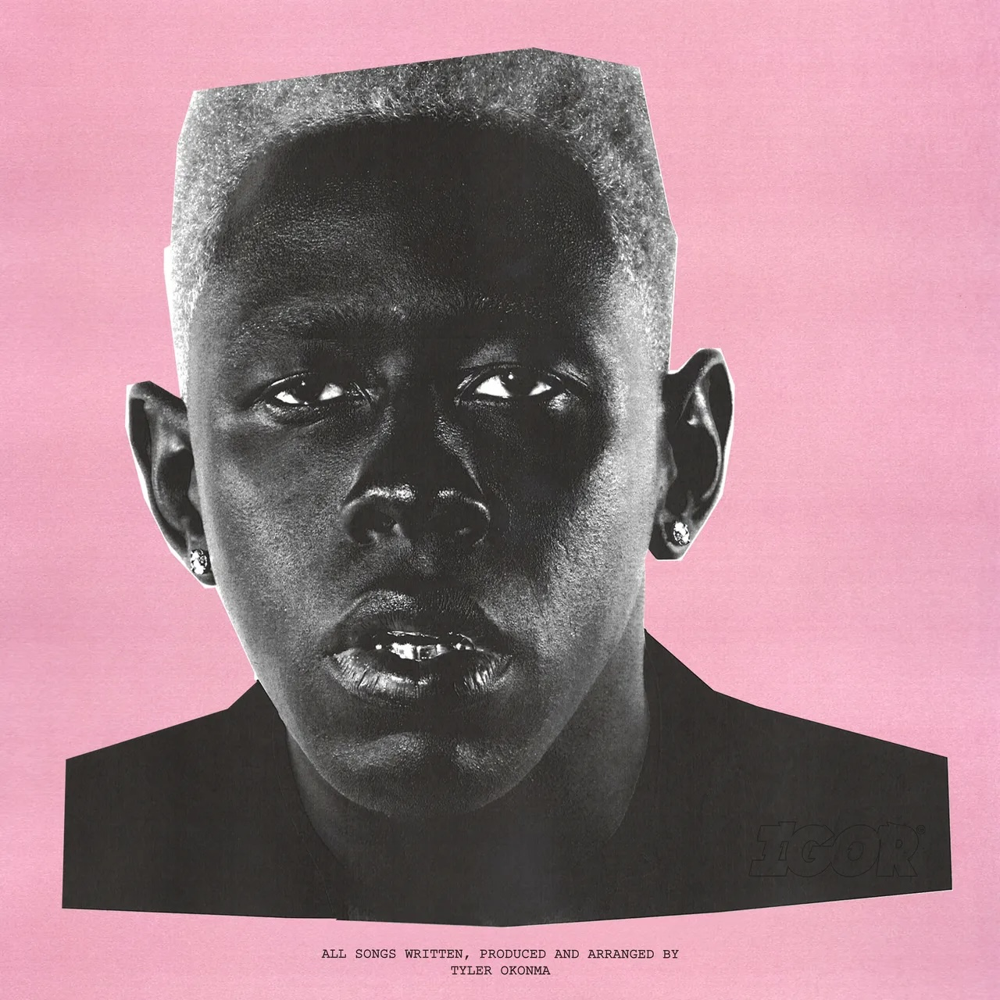

On May 17, 2019, Tyler, The Creator released IGOR, his fifth studio album under Columbia Records, a 12-track, 39-minute project produced entirely by Tyler, with additional work from Slowthai, Playboi Carti, and others. A sonic departure from his past, this breakup tale won a Grammy for Best Rap Album. As of March 11, 2025, 12:43 PM EDT, with its Platinum certification and X posts hailing its emotional arc, it’s a modern classic—let’s unpack its wild ride.
The cover—a stark, pink-hued portrait of Tyler as IGOR—sets the stage for IGOR’s chaotic love story: infatuation, betrayal, and acceptance. Tyler narrates a crumbling romance, with “EARFQUAKE” pleading “Don’t leave, it’s my fault,” and “I THINK” chasing euphoria—“I think I’m falling in love.” “NEW MAGIC WAND” erupts with jealousy—“She’s gonna leave if you stay”—while “WHAT’S GOOD” vents rage. It’s a cohesive breakup opera, lauded for its narrative but critiqued for its dense synth layers.
Tyler, The Creator, with assists from Slowthai, Playboi Carti, and Kanye West, crafts IGOR’s sound, recorded across LA and Lake Como, Italy, blending funk, soul, and warped synths. “IGOR’S THEME” sets a menacing tone with distorted keys, “RUNNING OUT OF TIME” floats on airy falsettos, and “A BOY IS A GUN*” samples lush 70s vibes. The 39-minute runtime is tight, though tracks like “PUPPET” and “GONE, GONE / THANK YOU” test patience, balancing brilliance with excess.
IGOR features Playboi Carti, Lil Uzi Vert, Solange, Kanye West, and more, weaving into Tyler’s vision. Carti’s wild energy lifts “EARFQUAKE”, Solange’s vocals haunt “I THINK”, and Kanye growls on “PUPPET”. Jerrod Carmichael’s interludes tie the story. X fans praise the seamless guests, though some feel Tyler’s solo moments shine brightest.
Tyler’s path to IGOR began with the raw *Bastard* (2009), evolved through Goblin (2011) and Wolf (2013), and bloomed with Flower Boy (2017). After that critical success, IGOR—selling 165,000 units in its first week and hitting No. 1 on the Billboard 200—pushed his artistry into theatrical territory, leading to *Call Me If You Get Lost* (2021).
IGOR is a 39-minute odyssey of love and loss, blending Tyler’s eclectic production with raw emotion. Its narrative and sound dazzle, though its density divides listeners, with X posts ranging from 9 to 10/10. As of March 11, 2025, 12:43 PM EDT, its Platinum status (2019), Grammy win (2020), Metacritic score of 81, and Rolling Stone’s 500 Greatest Albums rank at No. 499 cement its legacy. A must for Tyler fans, it’s a wild ride for newcomers.
Originality (20/20): A genre-bending breakup tale.
Production Quality (19/20): Lush and inventive, occasionally cluttered.
Lyrics and Messaging (18/20): Emotional and vivid, slightly abstract.
Enjoyment Factor (19/20): Immersive and replayable.
Consistency (18/20): Strong arc, with minor lulls.
IGOR is Tyler’s sonic triumph, a breakup epic with heart and chaos. Its highs soar, its lows sting—play it loud and ride the wave.